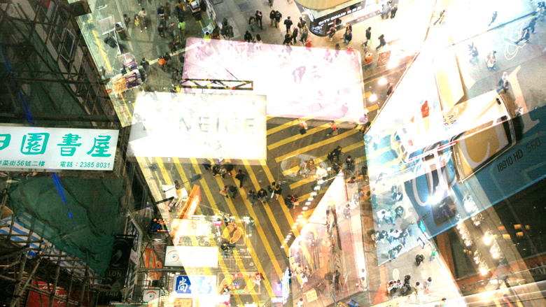
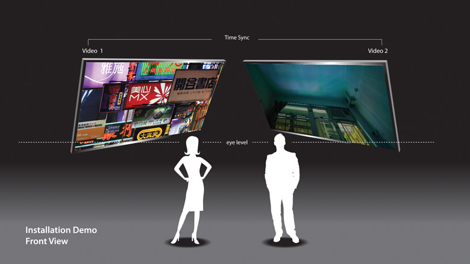
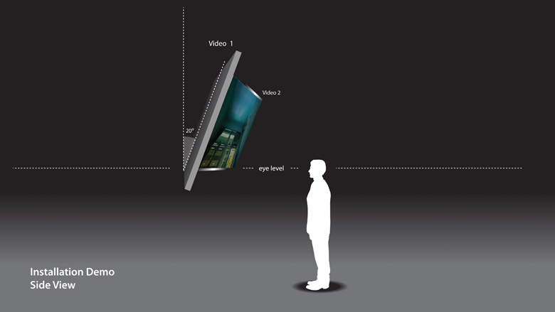
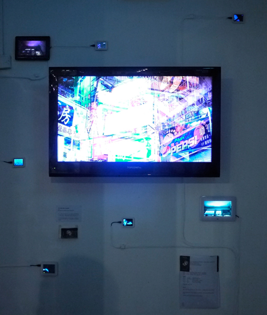

The Lucifer Effect, Mongkok
Direct Link: http://wesley.com.hk/artist/lucifer.html

Youtube Link Youtube連結:
Video 1 of 2: http://www.youtube.com/watch?v=gyi79BJ-M3Q
Video 2 of 2: http://www.youtube.com/watch?v=RPW49FaeJXE
| The Installation 裝置設計: |
| Front View 正面: |
|  |
| Side View 側面: |
|  |
|  | Installation for "The Piece – My Favourite Work in My School Days" "2012香港藝術學院校友作品展"之裝置設計 |
Artist Statement 創作自述:
Mongkok was qualified to be mentioned as the most significant district in Hong Kong. According to Guinness World Records, Mongkok has the highest population density in the world. Thus, the Sai Yeung Choi Street Pedestrianisation probably has the highest population density in Mongkok. In the pass fill years, there are several bricks and Strong Acids attack from the top to the Pedestrianisation. The offender was not found in most of the case. It was analyzed that, the offender could be a resident of the street like me, and the possibility is very high.
In fact, on this crowed space, we have all the commercial activities, promotions, street performance etc. All these have brought residence a high amount of Light pollutions, air pollutions, sound pollutions, poor hygiene, urban heat island, tiny living space and lack of privacy etc. In the aspect of environmental psychology, we've got all the triggering factor of Deviant behaviors here.
The Book "The Lucifer Effect" by Philip Zimbardo has shown how good people turn evil affected by the environment. The word Lucifer, which is the name of Satan before his fallen, literally means "light-bearer". As an artist and also a resident of the street, I am hoping to reveal how the intensive stimulus such as lights sounds and crowd triggering the Lucifer Effect happens in Mongkok, The Sai Yeung Choi Street Pedestrianisation through this project.
In this video installation work, I put 2 syncanize video together in a panel. One is the outside environment on the street, revealing the tension of those stimulus I mention before. The other one is the environemnt inside the house, revealing the psychological change affected by the environment outside.
根據健力士世界紀錄 , 旺角擁有世界上最高的人口密度。 因此,西洋菜街行人專用區 -- 首三次鏹襲案的案發現場, 極可能是旺角人煙最稠密的地方。
這個擁擠的空間為居民帶來高度污染, 衞生惡劣, 熱島效應, 狹小的生活空間及缺乏私隱等。 從環境心理學角度來看, 這裏可謂有齊所有觸發偏差行為的元素。
作為這裡的居民，我希望透過本作品揭示路西法效應因何在旺角西洋菜街行人專用區上演。
Bibliography 參考書目:
HO, Ding Bong, “Diagnosing Suicide“ Arcadia Press Ltd, Hong Kong, 2008
MCANDREW, Francis T., “Environmental Psychology”Brooks/Cole Pub Co, Phoenix, AZ, U.S.A, 1992
OSAMU, Nakata, “Criminal Psychology”The Buffalo Book Co., Taiwan, 2000
RYBCZYŃSKI, Zbigniew, “Tango”SMFF Se-Ma-For Łódź, Poland, 1980
SHNEIDMAN, Edwin S., “Autopsy of a Suicidal Minddab” Oxford University Press, New York, 2004
YANG, Sulung, “Criminal Psychology”Wu-Nan Book Inc., Taiwan, 2006
ZIMBARDO, Philip, “The Lucifer Effect” Random House, Inc., U.S.A, 2007
| Exhibitions 參與展覽: | |||
| 05/2012 | The Piece – My Favourite Work in My School Days – the Hong Kong Art School's Alumni Exhibition / Hong Kong Art School/ The Gallery of Hong Kong Art School 2012香港藝術學院校友作品展 / 香港藝術學院 / 香港藝術學院藝廊 | ||
| 06/2011 | "No Nukes, We Can"Unplug Concert / Friends of Earth / Youth Square Y Theatre, Chai Wan, Hong Kong 「有心 無核」不插電音樂會 / 地球之友 / 柴灣青年廣場Y劇場 | ||
| 08/2010 | New Trend 2010 / Artist Commune / Artist Commune, Cattle Depot Artist Village, Hong Kong 出爐2010 –藝術系畢業生聯展 / 藝術公社 / 牛棚藝術村藝術公社 | ||
| 07/2010 | This Way Up –Bachelor of Arts (Fine Art) Graduation Exhibition 2010 / Hong Kong Art School / Pao Galleries, Hong Kong Arts Centre, Hong Kong 從此起 –藝術學士課程畢業展二零一零 / 香港藝術學院 / 香港藝術中心包氏畫廊 | ||
| Media Coverage 傳媒報導: | |||
| 21/03/2013 | The Wall Street Journal China Real Time Report | 華爾街日報 中國實時報 | Hong Kong Lights Keep Residents Up at Night |
| 12/05/2012 | China News | 中新網 | 香港藝術新人奇思妙想作品盡顯民族風 |
| 10/05/2012 | Hong Kong Economic Journal | 信報 | 香港藝術學院藝廊校友作品展 美麗回顧 感受成果 |
| 05/2012 | ArtsLink | 藝訊 | 是藝廊，也是木人巷──香港藝術學院藝廊的誕生 |
| 21/02/2012 | CNN | 有線電視新聞網 | Hong Kong's light pollution a health risk? |
| 21/12/2011 | ATV Home | 亞洲電視本港台 | 我要做特首2 第73集 第02節 |
| 01/04/2011 | New Monday | 新Monday | 光污染升級襲香港 |
| 28/03/2011 | now TV | now寬頻電視 | 關注香港光污染 |
| 21/03/2011 | Weekend Weekly | 新假期 | 熄燈吧! |
| 14/03/2011 | South China Morning Post | 南華早報 | Lights, cameras, action... artist fights street glare |
| MingPao | 明報 | 藝術家YouTube片控訴旺角光污染 | |
| Oriental Daily | 東方日報 | 藝院生無言控訴光污染 | |
| The Sun Daily | 太陽報 | 萬張相片控訴旺角光污染擾民 | |
| onTV | 東方電視 | 藝院生攝6000張相製短片控訴光污染 | |
| Sing Tao Daily | 星島日報 | 藝術相片影片控訴旺角光污染 | |
| Apple Daily | 蘋果日報 | 隔牆有耳：旺角光污染 光到人都癲 | |
| Hong Kong Economic Times | 經濟日報 | 旺角光污染滋擾 住客：似瞓街 | |
| Wen Wei Po | 文匯報 | 立法規管光污染 框架月內公布 | |
| 21/02/2012 CNN | |||